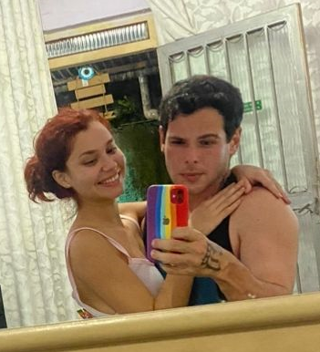

Início do nosso amor
Nos conhecemos pelo aplicativo boo e a gente se identificou tão rápido que de um dia para o outro já tinha desinstalado o aplicativo pois já sabia que tinha encontrado a pessoa certa.

O primeiro eu te amo
Apesar de eu claramente amar mais, ela que disse que me amava a primeira vez, com só dois dias de conversa, mas em minha defesa eu já tinha sentido vontade de dizer antes, mas não queria pagar de emocionado porquê estava tudo acontecendo extremamente rápido.

O primeiro encontro
Ela estava na casa de sua avó paterna quando fizemos a primeira chamada de audio pois ela queria jogar roblox comigo, muito relutante aceitei pois não gosto de falar no telefone, chamada de acabou virando de vídeo, quando sugeri pedir para a avó dela deixar eu conhece-la, meio sem esperança de ter uma resposta positiva, mas acabou que realmente deixaram, peguei e me arrumei rapidamente parar partir 300 milhões de km até são joão de meriti, em meio a uma tempestade absurda.
Quando cheguei ao bairro, havia se formado um rio na entrada, e o uber se recusou a passar, então literalmente atravessei o rio quase que nadando a caminho do encontro do amor da minha vida, todo ensopado, parecendo o kurupira no meio da tempestade, receoso de estar horrível, cheguei a sua casa, e no momento que a vi tive certeza que era com ela que passaria o resto dos meus dias.
Vou me abster de entrar em detalhes, mas nosso primeiro encontro foi o melhor dia da minha vida, já a pedi em namoro após nosso primeiro beijo, não havia uma dúvida sequer de nossos sentimentos, não tinha porquê esperar, eu queria ela, para sempre, nunca estive tão feliz, namoramos, dormimos juntos como um casal, não existe palavras que definam a felicidade que senti aquele dia, gostaria em te-la dormindo em meus braços pra sempre.